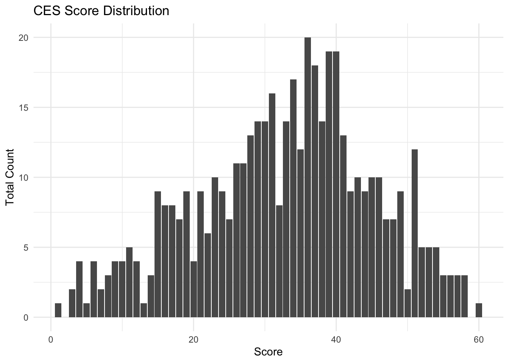
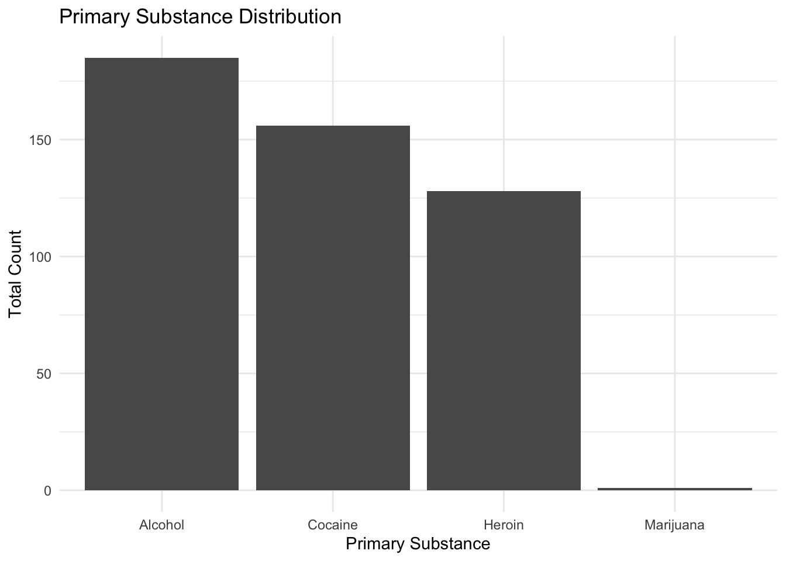
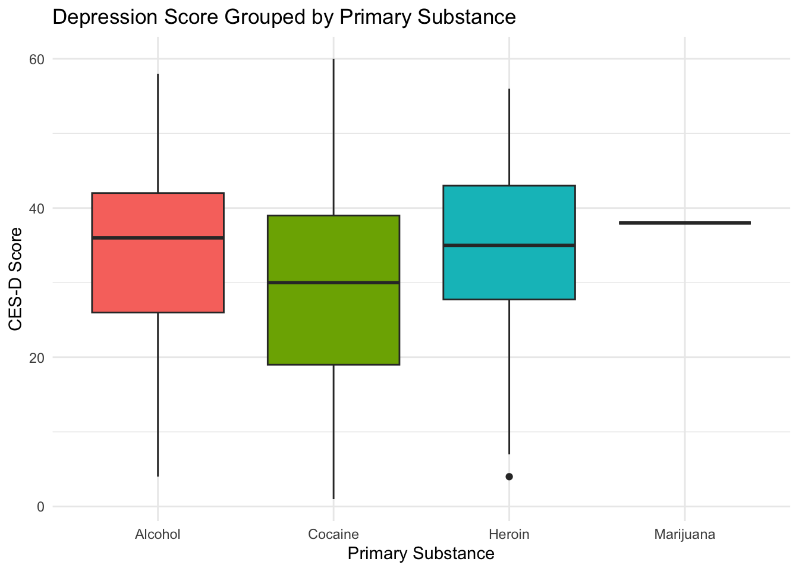
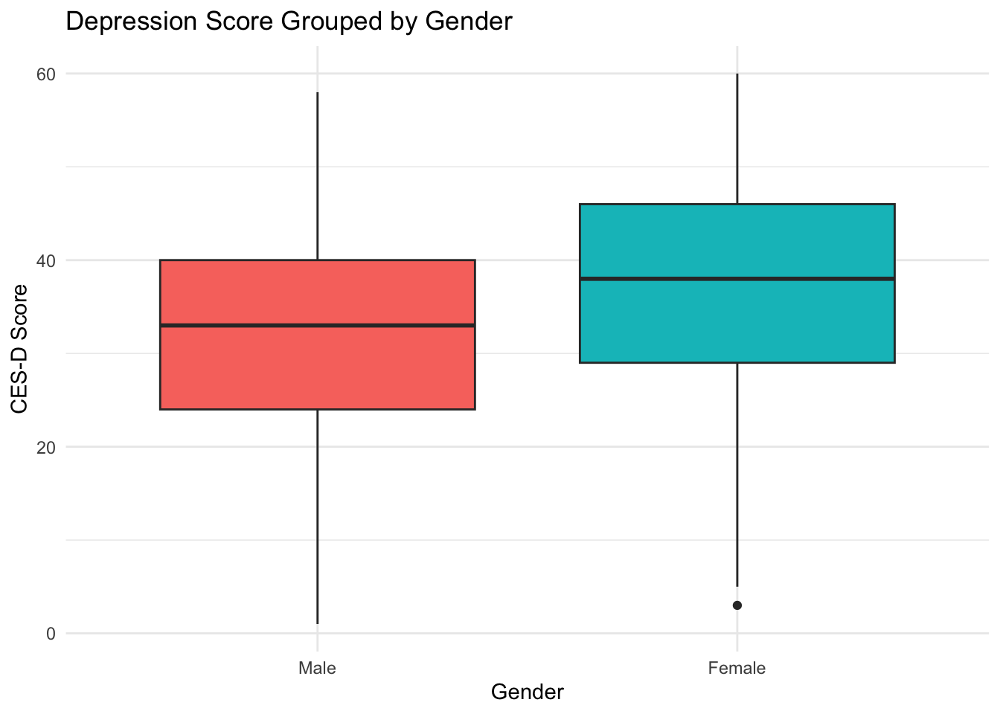
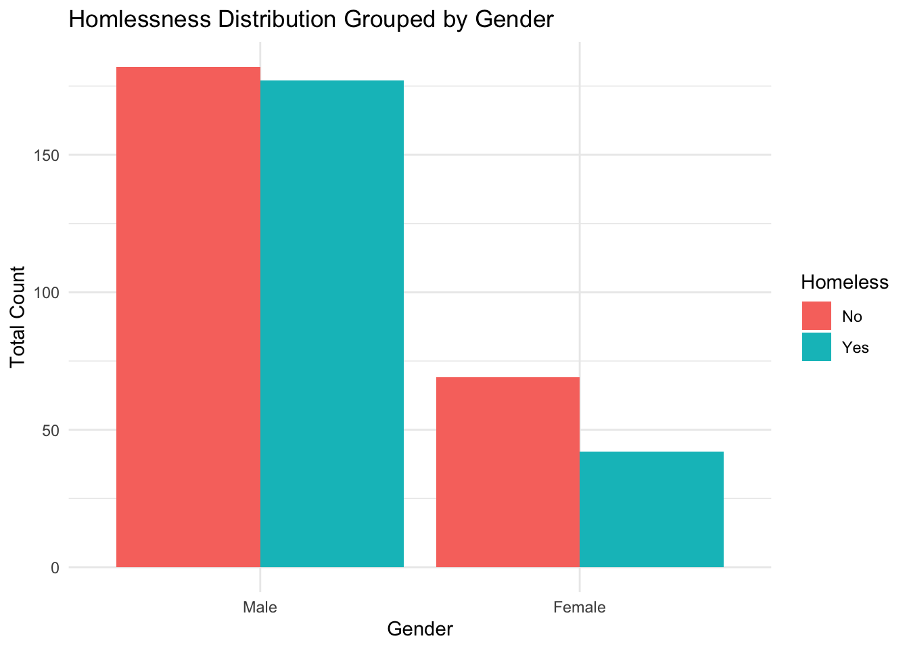
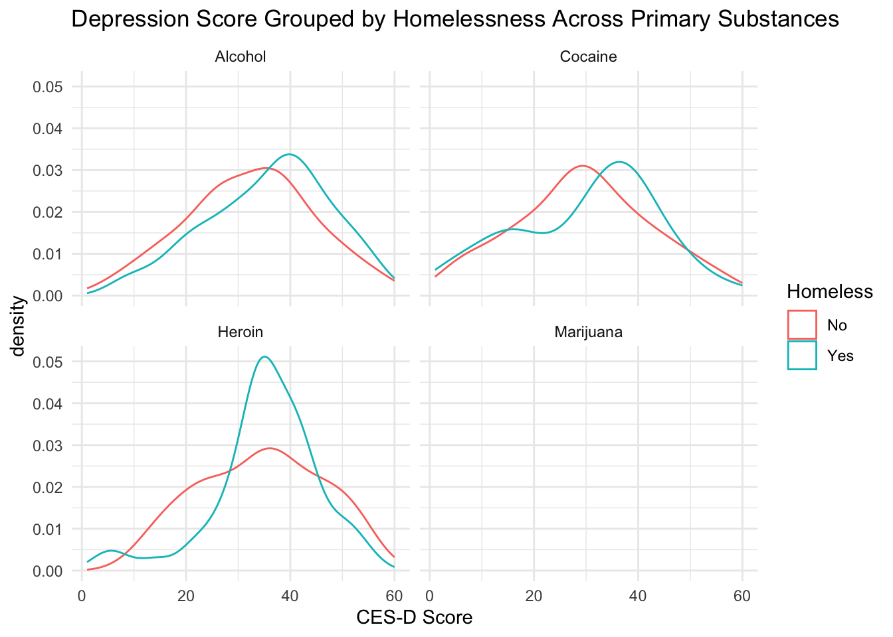

── Conflicts ────────────────────────────────────────── tidyverse_conflicts() ──
✖ dplyr::filter() masks stats::filter()
✖ dplyr::lag() masks stats::lag()
ℹ Use the conflicted package (<http://conflicted.r-lib.org/>) to force all conflicts to become errors
rehab <-read_csv("help.csv")
Rows: 470 Columns: 788
── Column specification ────────────────────────────────────────────────────────
Delimiter: ","
chr (3): A14G_T, A17I_T, C3F_T
dbl (636): ID, TIME, NUM_INTERVALS, INT_TIME1, INT_TIME2, DEAD, A1, A9, A10,...
lgl (149): DAYS_SINCE_BL, DAYS_SINCE_PREV, PREV_TIME, C3K_M, E18A, E18B, E18...
ℹ Use `spec()` to retrieve the full column specification for this data.
ℹ Specify the column types or set `show_col_types = FALSE` to quiet this message.
Registered S3 method overwritten by 'mosaic':
method from
fortify.SpatialPolygonsDataFrame ggplot2
The 'mosaic' package masks several functions from core packages in order to add
additional features. The original behavior of these functions should not be affected by this.
Attaching package: 'mosaic'
The following object is masked from 'package:Matrix':
mean
The following objects are masked from 'package:dplyr':
count, do, tally
The following object is masked from 'package:purrr':
cross
The following object is masked from 'package:ggplot2':
stat
The following objects are masked from 'package:stats':
binom.test, cor, cor.test, cov, fivenum, IQR, median, prop.test,
quantile, sd, t.test, var
The following objects are masked from 'package:base':
max, mean, min, prod, range, sample, sum
#?HELPfull
Data Description:
The data that we will be using comes from the Health Evaluation and Linkage to Primary Care (HELP) study which was a clinical trial for adults receiving in-patient care at a detoxification unit. If patients did not have a primary care physician then they were randomized with the goal of linking to primary medical care. This clinical research data was approved by Institutional Review Board of Boston University Medical Center and is housed in the mosaic RStudio package. For our research focus we will be utilizing the explanatory variables a1 (gender represented by 1 = male and 2 = female), age, homeless (related to homeless status with 0 = no and 1 = yes), and ces_d (center for epidemiologic studies depression measure 0-60). Our chosen variables will help us determine the potential correlation between these factors and the chosen first drug of choice (prim_sub) for an individual in the detoxification unit.
Question to Research:
Do age, gender, depression score, and homelessness predict primary substance type?
Exposures: age, a1 (gender represented by 1 = male and 2 = female), homeless (related to homeless status with 0 = no and 1 = yes), and ces_d (center for epidemiologic studies depression measure 0-60)
Outcomes: The first substance an individual at the detoxification center has taken (prim_sub).
Descriptions of variables:
Depression levels (ces_d)
Depression levels in patients in the detoxification center are measured using the Center for Epidemiological Studies depression measure which ranges from 0-60. Patients with higher scores are deemed to have more depressive symptoms.
Primary substance (prim_sub)
The primary substance in this data set refers to the first drug of choice for the patient in the detoxification center. The drugs are categorized by levels with 0 = none, 1 = alcohol, 2 = cocaine, 3 = heroin, 4 = barbiturates, 5 = benzos, 6 = marijuana, 7 = methadone, and 8 = opiates.
Summary: Researchers conducted a systematic review of quantitative studies from 2007 and 2020 to assess the trends associated with substance abuse among the global adult homeless population. They found that alcohol was a highly popular primary drug abuse substance, but overtime there was an emergence in psychoactive substance use as well. Substance abuse was also found to be more common among men due to mental health and trauma stressors.
Summary: This paper focuses on a cross sectional study observing whether there is a statistical difference in drug consumption between homeless men and women in Spanish shelters. They also assess whether there is higher drug usage present among homeless Spanish nationals or immigrants. After conducting the study they found that there was not a statistically significant difference between men and women in their observed population in terms of their drug use. However, they found that the reason behind initial drug use did differ. Women tended to initially use drugs due to partner influence or lack of family affectivity while men initiated drug use because of personality or social factors. We found the difference in initial drug use between men and women to be very interesting especially as we examine whether factors like depression score influence an individual's primary substance in the HELP data.
Additionally, their investigation into whether or not there was a difference in drug risk among homeless Spanish nationals and immigrants found that Spanish nationals were statistically at a higher tendency of drug use compared to immigrants. This section of the research paper seemed compelling for future investigation of whether primary substance differs among homeless populations across the U.S depending on their geographic location. The HELP data does not account for geographic information at this time so for now this is more of a future expansion of our research.
Summary: Study focuses on examining the associations between homelessness, gender, the severity of substance use, and the presence of mental health comorbidity among individuals entering treatment for SUD. After conducting a logistic regression on the 2017 Treatment Episodes dataset they found that individuals experiencing homelessness that admit into services have a higher usage rate of cocaine and meth, have higher frequency of use, and have higher rates of mental health comorbidity. Among their population they also found that women experiencing homelessness were highly associated with having mental health comorbidities. This research study helped in answering a question that bubbled up from our reading of, "Differences in Drug Use among Persons Experiencing Homelessness According to Gender and Nationality" where they found different influential factors impact initial drug use between men and women. We believe that mental health could be a factor that influences primary substance use so finding a paper that observed higher mental health comorbidities among homeless women that use substances is helpful to our research.
Exploration of Data:
Depression levels (ces_d) general distribution count:
ggplot(rehab, aes(x = ces_d)) +geom_bar() +labs(title ="CES Score Distribution", x ="Score", y ="Total Count") +theme_minimal()

summary(rehab$ces_d)
Min. 1st Qu. Median Mean 3rd Qu. Max.
1.00 25.00 34.00 32.86 41.00 60.00
Findings: The CES depression scores tend to peak towards the 30-40 score range. This indicates high frequency of mid-range depression symptoms among the population in the HELP data set. This mid-range score finding is also supported by the summary statistics for CES-D scores which indicate a mean of 32.86.
Primary substance (prim_sub) general distribution count:
ggplot(rehab, aes(x =factor(prim_sub_label))) +geom_bar() +labs(title ="Primary Substance Distribution", x ="Primary Substance", y ="Total Count") +theme_minimal()

summary(rehab$prim_sub)
Min. 1st Qu. Median Mean 3rd Qu. Max.
1.000 1.000 2.000 1.887 3.000 6.000
Findings: The primary substance with high usage rates among the HELP population is alcohol with the lowest being marijuana. Further information on the exact distribution counts can be found in the summary count of each primary substance group with alcohol having 185 users and marijuana only having 1. It should also be noted that responses to “None”, “Barbiturates”, “Benzos”, “Methadone”, and “Opiates” were left off because no patients in the detoxification center responded to those options as their primary substance.
Depression Score in association with Primary Substance:
ggplot(rehab, aes(x =factor(prim_sub_label), y = ces_d, fill =factor(prim_sub_label))) +geom_boxplot() +labs(title ="Depression Score Grouped by Primary Substance", x ="Primary Substance", y ="CES-D Score") +theme_minimal() +theme(legend.position ="none")

Findings: After grouping depression score by the different primary substances used by the detoxification patients we found that alcohol tended to have a higher mean depression score (>35) compared to cocaine and heroine. We also saw that in terms of variance cocaine had a wider range of variance extending to the highest score of 60 indicating a high instance of depression symptoms.
Depression Score in association with Gender:
ggplot(rehab, aes(x =factor(gender_label), y = ces_d, fill =factor(gender_label))) +geom_boxplot() +labs(title ="Depression Score Grouped by Gender", x ="Gender", y ="CES-D Score") +theme_minimal() +theme(legend.position ="none")

Findings: When evaluating the depression levels of men versus women in the detoxification center we found that women had a higher depression scores overall. Women had a mean score of >35 compared to men who scored ~30.
Homelessness in association with Gender:
ggplot(rehab, aes(x =factor(gender_label), fill =factor(home_label))) +geom_bar(position ="dodge") +labs(title ="Homlessness Distribution Grouped by Gender", x ="Gender", y ="Total Count",fill ="Homeless") +theme_minimal()

Findings: From this bar plot we can see that for both categories of homelessness men tend to be more represented overall in the HELP data set. However, within the male population there is a close tie between those that are homeless and those that are not. For women this is not the case. Women who are not homeless are at a higher proportion than those that are in the detoxification center.
Depression Score and Homelessness grouped by Primary Substance:
ggplot(rehab, aes(x = ces_d, color =factor(home_label))) +geom_density() +facet_wrap(~ prim_sub_label) +labs(title ="Depression Score Grouped by Homelessness Across Primary Substances", x ="CES-D Score",color ="Homeless" ) +theme_minimal()
Warning: Groups with fewer than two data points have been dropped.
Warning in max(ids, na.rm = TRUE): no non-missing arguments to max; returning
-Inf

Findings: This density chart shows the interaction between homelessness and depression score across different primary substances. From the plot we found an interesting relationship among the heroin drug use group. Detoxification patients who use heroin and are homeless tend to have a higher population representation in scoring a mid-high range depression score (30-40). Meanwhile, those that used heroin and were not homeless were more spread across 20-60.